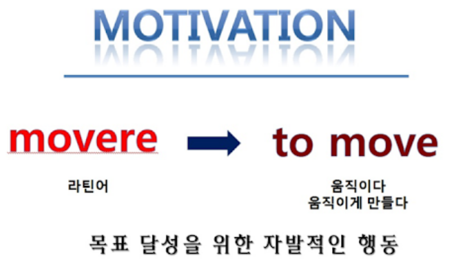
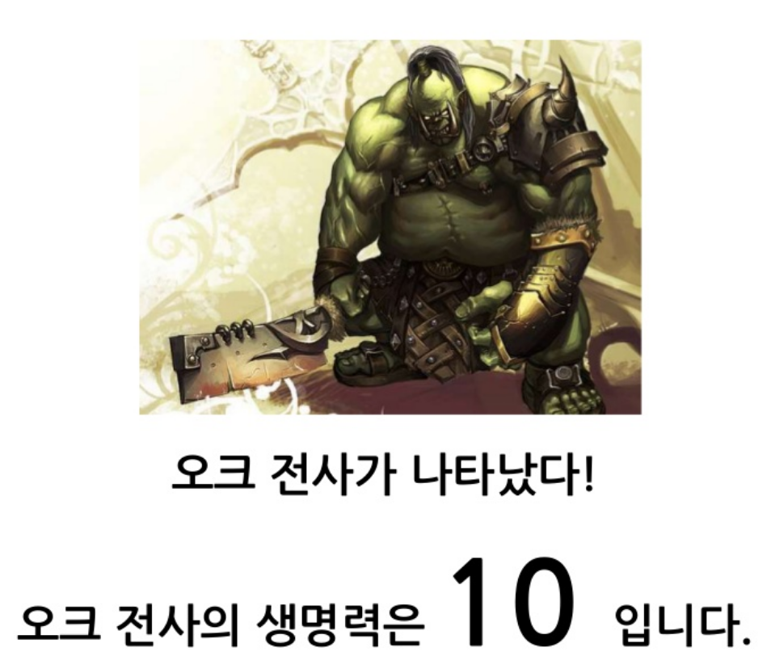
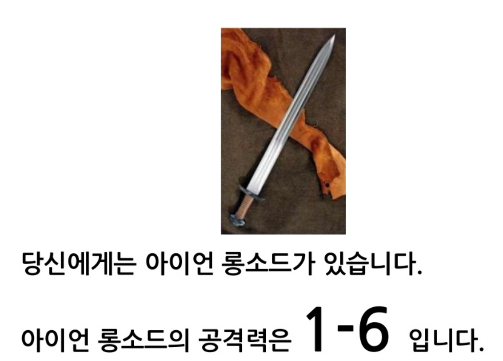
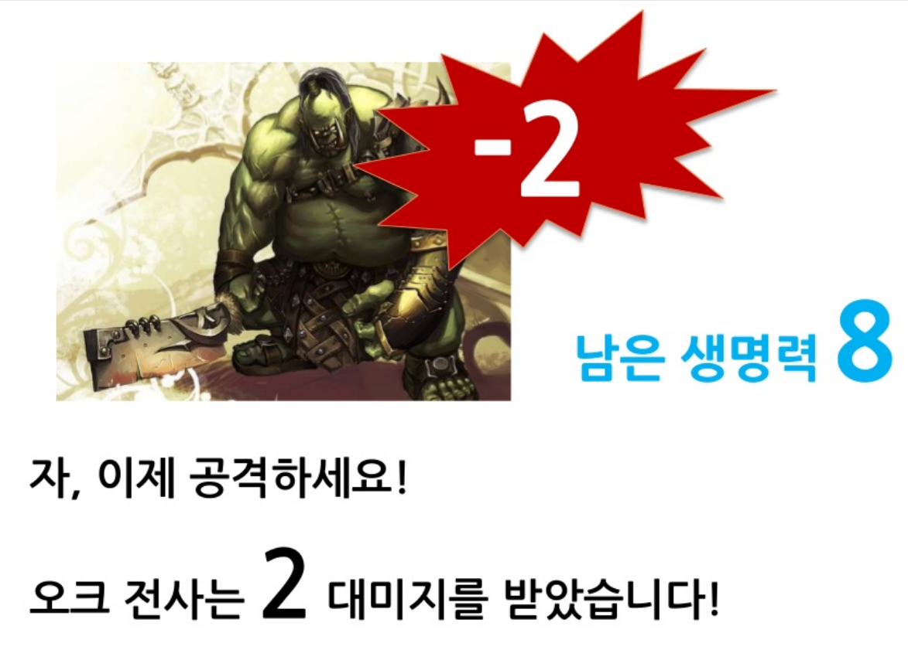
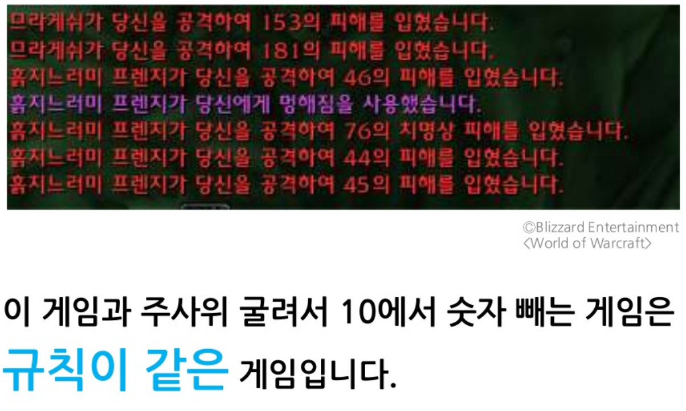

03 · MOTIVATION
동기는
의미를
붙인다

같은 규칙에 이유를 붙여
플레이어를 움직이게 합니다.
먼저 숫자만
움직여 보겠습니다
계산은 분명하지만
아직 계속할 이유는 없습니다.
10
게임을 시작합니다
1083-2
숫자에 맥락을 붙이면
전투가 됩니다
같은 뺄셈이 적·무기·피해·승리로 바뀌며
플레이어에게 목적을 줍니다.




사람이 계속하는 이유는
세 가지 감정으로 압축됩니다
잘하고 있다는 느낌, 내가 선택한다는 느낌,
누군가와 연결되어 있다는 느낌입니다.
계속
플레이
플레이
유능감점점 잘한다
자율성내가 선택한다
동기는 마지막에
이야기가 됩니다
목표가 관계와 감정으로 이어지면
플레이어는 결과를 자기 일처럼 받아들입니다.
숫자에 의미를 붙이면
플레이가 됩니다.